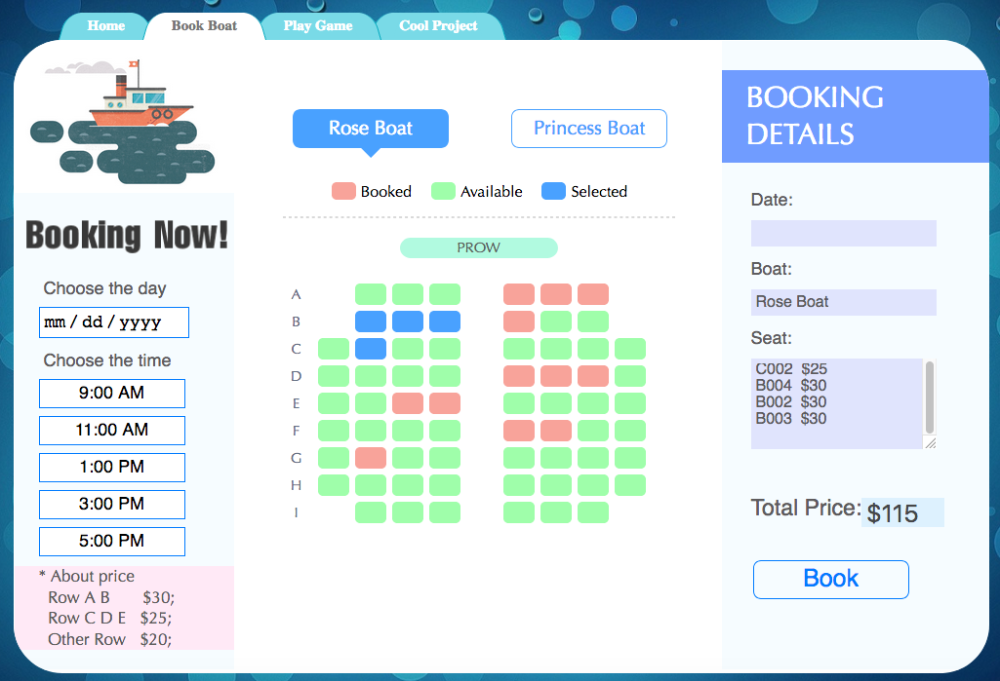
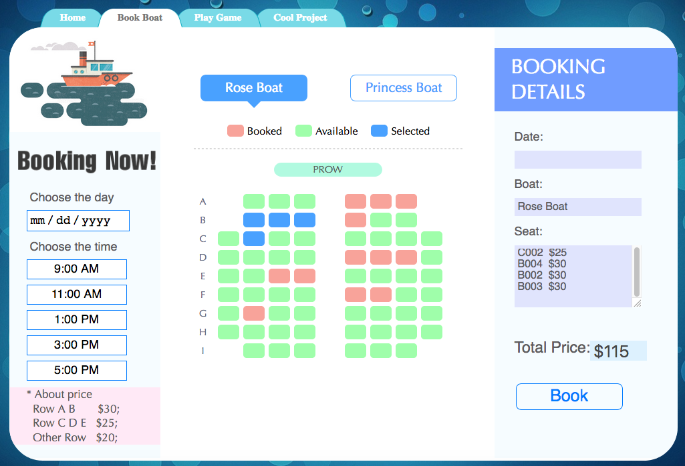

Bootstrap网页简历制作 2018
运用了Bootstrap3中导航条，表格，折叠，进度条，panel，提示条和图标等技术制作此网页简历
Web开发课程大作业一，包活html元素的位移，旋转和缩放等，CSS3的动画制作，原生JavaScript制作动画。
Web开发课程大作业二（团队项目），辅助队友开发一个订票页面，主力开发一个基于canvas的捕捉种子游戏。


Web开发课程大作业二（独立项目），对捕鱼达人的源代码进行修改，制作了一个钓鱼小游戏。

C# GUI开发之数据库管理 2018
GUI课程大作业一，根据作业需求设计了GUI界面来管理某公司的求职数据，通过OLEDB与本地Access数据库连接，项目涉及数据库的增删查改以及数据的打印。
C# GUI开发之计算器 2018
GUI课程大作业二，设计简易的计算器进行四则运算，显示分步计算结果，该项目用到了面向对象编程，每一步计算都被当成是一个实例，并考察了字符串操作以及数据类型转换。
关系型数据库设计 2018
Database大作业，根据项目要求确定ERD图，包括了数据库的逻辑设计与物理设计，标准化与去标准化。
图像采样构建曲线方程(Python) 2014
原先在国内某事业单位工作时，需要获取大量水利文献中的采样数据，而年代久远的文献数据多以曲线图呈现，横纵坐标不精细并且缺少曲线方程，为了解决问题，工作之余学习Python两周写出一个GUI软件。软件功能如下，将扫描的曲线图加载进软件，点击鼠标标定原点，标定x轴参照点，标定y轴参照点，开始在曲线上采集任意多点，用采集点的坐标生成csv文件，最后通过采集的坐标重新生成曲线方程。